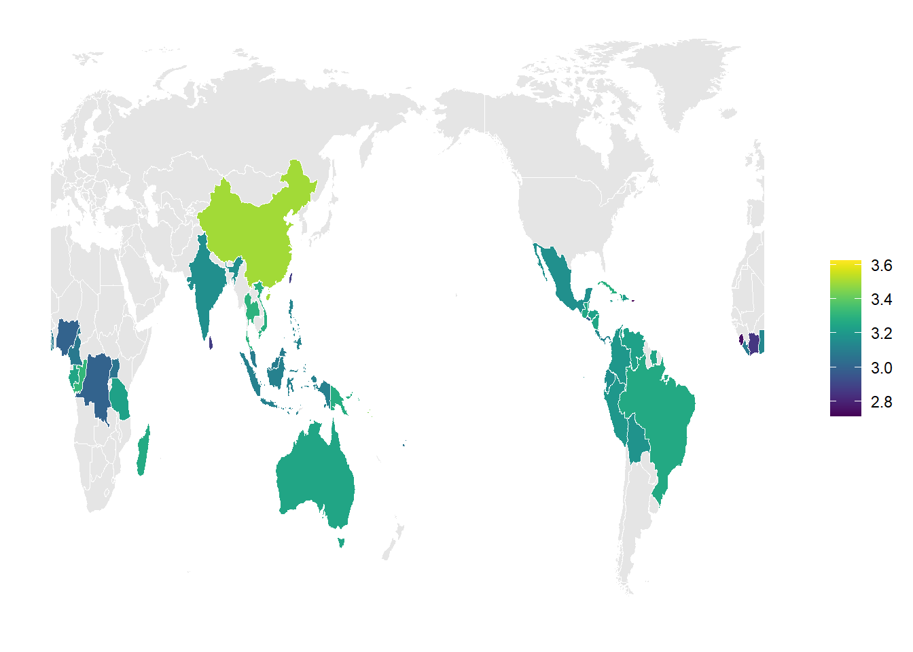
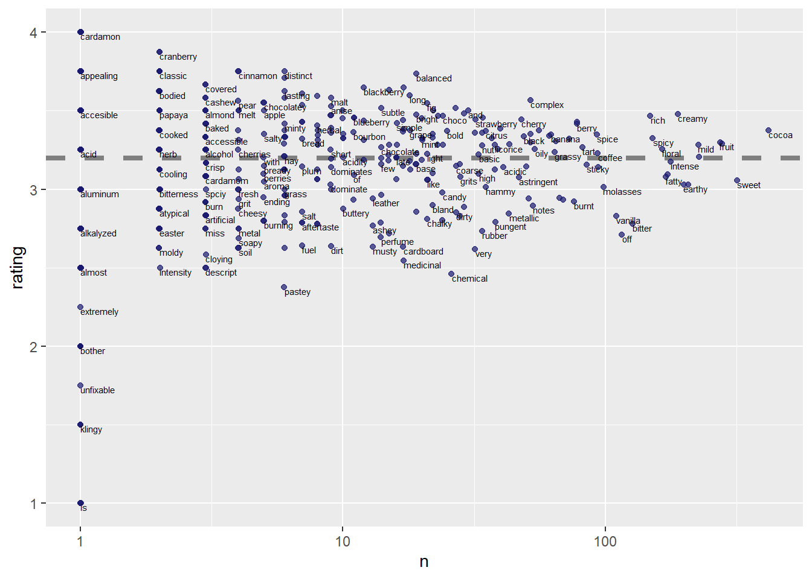
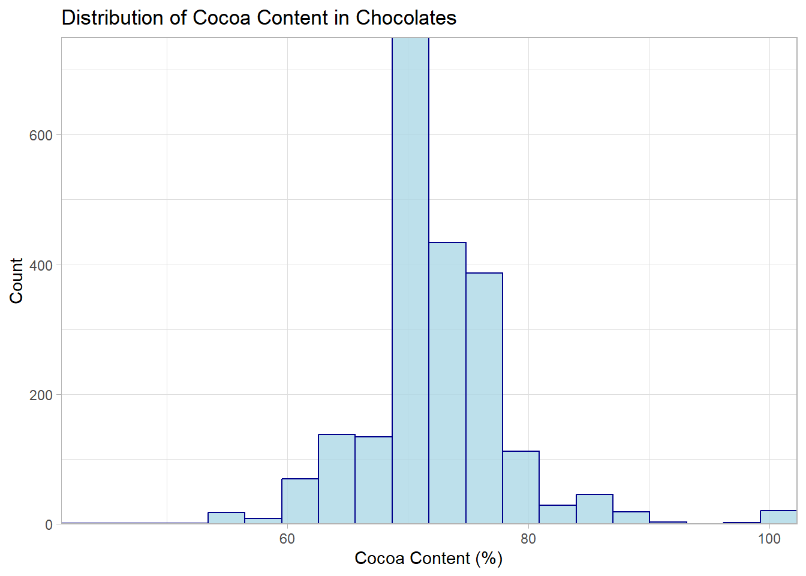
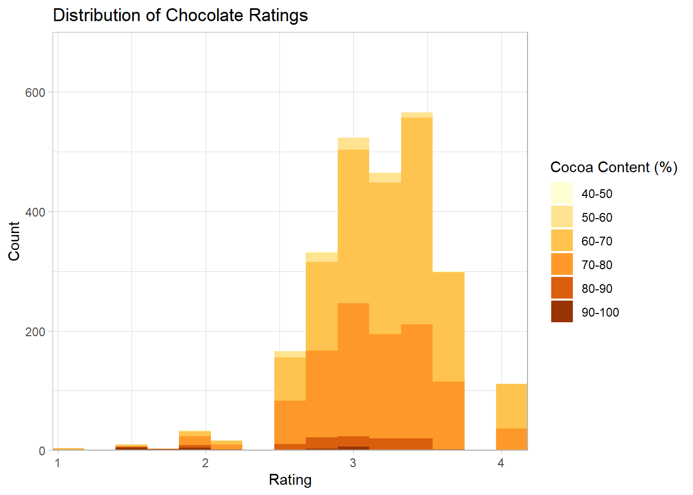
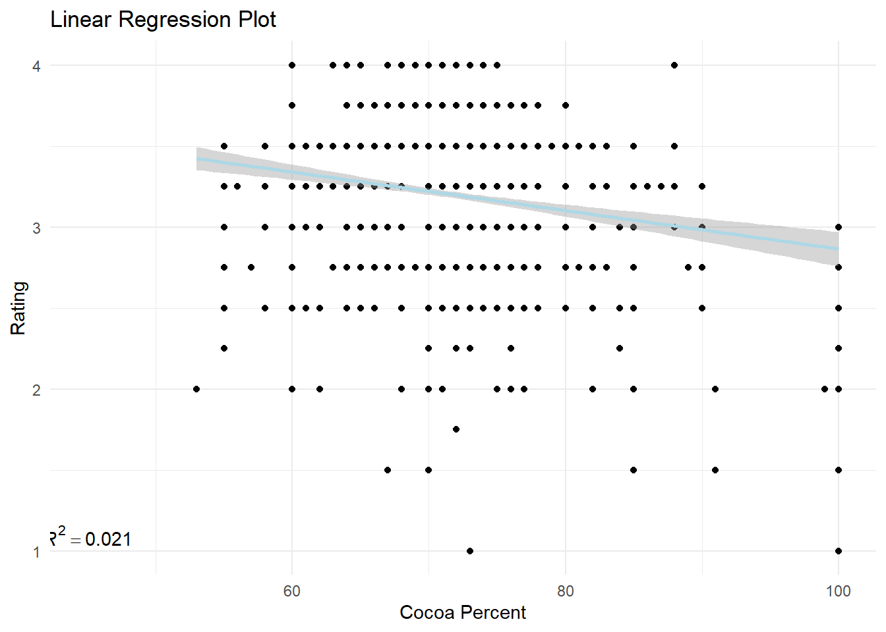
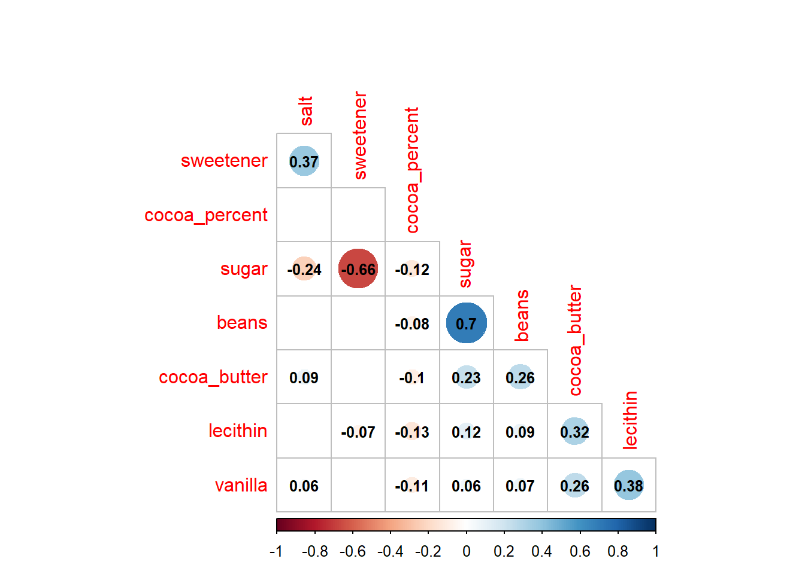
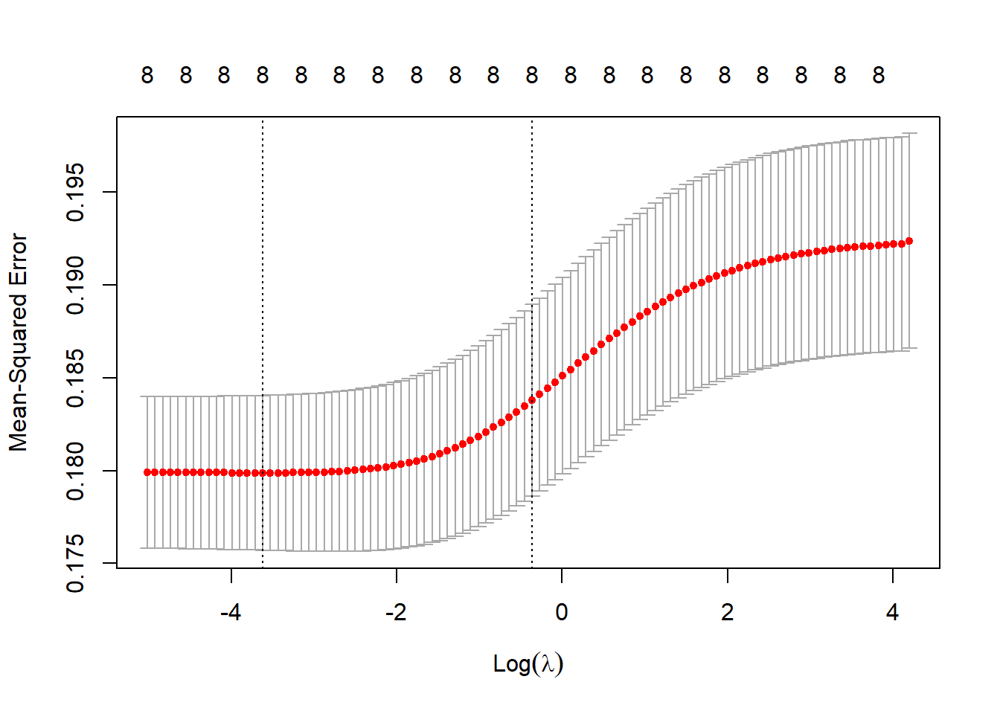
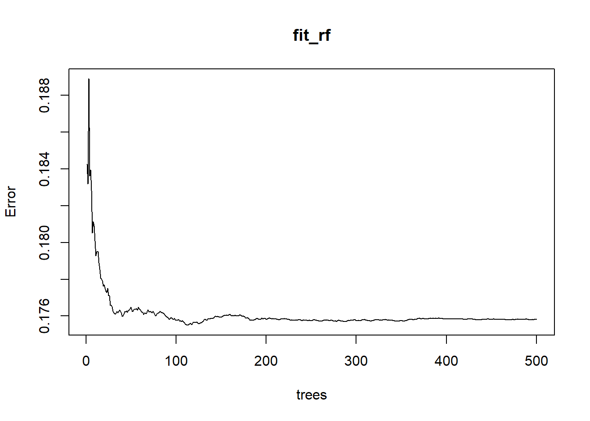
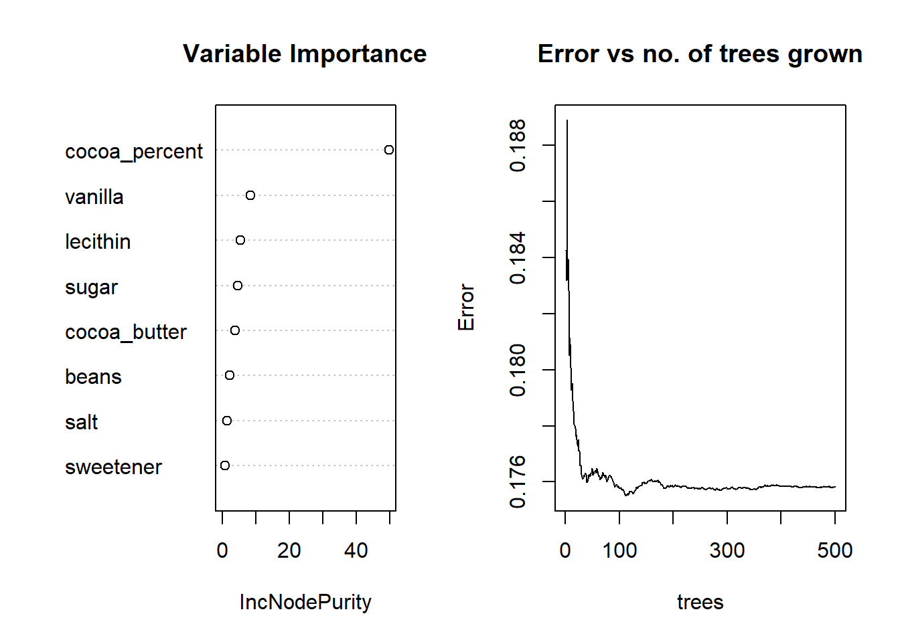
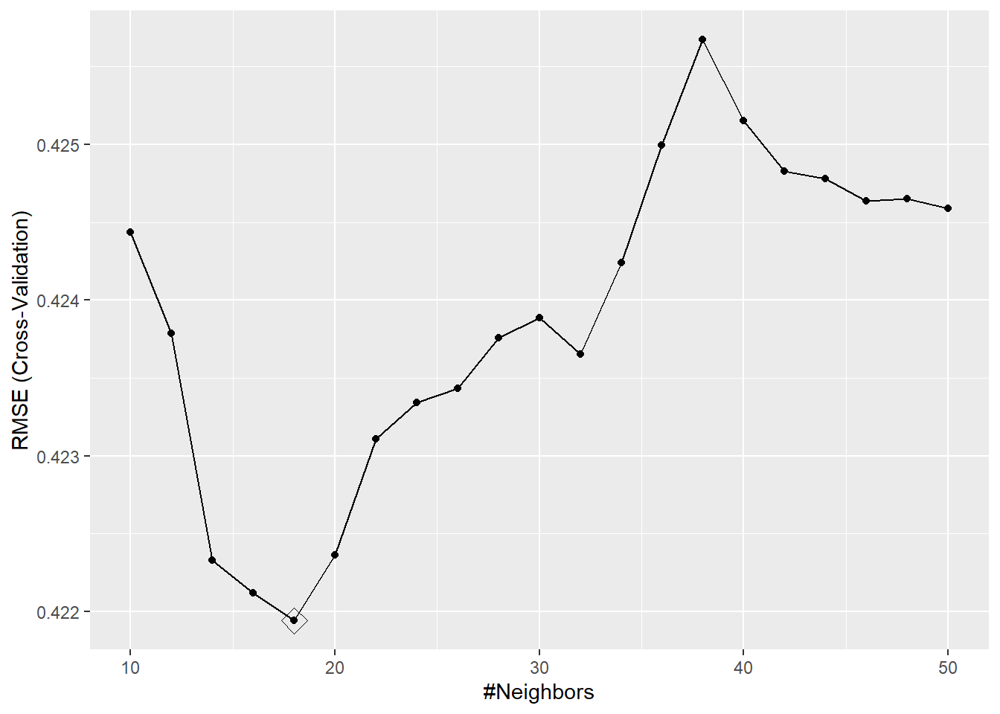

library(tidytuesdayR)
library(ggplot2)
library(dplyr)##
## Attaching package: 'dplyr'## The following objects are masked from 'package:stats':
##
## filter, lag## The following objects are masked from 'package:base':
##
## intersect, setdiff, setequal, unionlibrary(magrittr)
library(tidyr)##
## Attaching package: 'tidyr'## The following object is masked from 'package:magrittr':
##
## extractlibrary(tidyselect)
library(purrr)##
## Attaching package: 'purrr'## The following object is masked from 'package:magrittr':
##
## set_nameslibrary(tibble)
library(readr)
library(stringr)
#install.packages('janitor')
library(viridis)## Loading required package: viridisLitelibrary(janitor)##
## Attaching package: 'janitor'## The following objects are masked from 'package:stats':
##
## chisq.test, fisher.testlibrary(DT)
library(kableExtra)## Warning in !is.null(rmarkdown::metadata$output) && rmarkdown::metadata$output
## %in% : 'length(x) = 3 > 1' in coercion to 'logical(1)'##
## Attaching package: 'kableExtra'## The following object is masked from 'package:dplyr':
##
## group_rowslibrary(tinytex)
#install.packages("webshot")
#webshot::install_phantomjs()raw_dat <- tidytuesdayR::tt_load('2022-01-18')## --- Compiling #TidyTuesday Information for 2022-01-18 ----## --- There is 1 file available ---## --- Starting Download ---##
## Downloading file 1 of 1: `chocolate.csv`## --- Download complete ---dat <- raw_dat$chocolate
glimpse(dat)## Rows: 2,530
## Columns: 10
## $ ref <dbl> 2454, 2458, 2454, 2542, 2546, 2546, 2…
## $ company_manufacturer <chr> "5150", "5150", "5150", "5150", "5150…
## $ company_location <chr> "U.S.A.", "U.S.A.", "U.S.A.", "U.S.A.…
## $ review_date <dbl> 2019, 2019, 2019, 2021, 2021, 2021, 2…
## $ country_of_bean_origin <chr> "Tanzania", "Dominican Republic", "Ma…
## $ specific_bean_origin_or_bar_name <chr> "Kokoa Kamili, batch 1", "Zorzal, bat…
## $ cocoa_percent <chr> "76%", "76%", "76%", "68%", "72%", "8…
## $ ingredients <chr> "3- B,S,C", "3- B,S,C", "3- B,S,C", "…
## $ most_memorable_characteristics <chr> "rich cocoa, fatty, bready", "cocoa, …
## $ rating <dbl> 3.25, 3.50, 3.75, 3.00, 3.00, 3.25, 3…# Remove "%" sign from cocoa content and convert it to a numeric variable
#convert cocoa_percent to a numeric
chocolate <- dat |>
mutate(cocoa_percent = str_extract(cocoa_percent, "\\d+") |>
as.numeric())|>
mutate(country_of_bean_origin=
recode(country_of_bean_origin,
"Congo"= "Republic of Congo",
"DR Congo"= "Democratic Republic of the Congo"))chocolate_df<- chocolate |>
mutate(n_ingredients = str_extract(ingredients, "\\d") |> as.numeric(),
ingredients_list = str_extract(ingredients, "[A-Za-z,*]+")) |>
separate_rows(ingredients_list,sep = ",") |>
mutate(ingredients_list = str_replace_all(ingredients_list,c(
"^S\\*$" = "sweetener",
"^S$" = "sugar",
"C" = "cocoa_butter",
"V" = "vanilla",
"B" = "beans",
"L" = "lecithin",
"^Sa$" = "salt")),
ingredients_list = replace_na(ingredients_list, "unknown"),
flag = 1) |>
pivot_wider(names_from = ingredients_list,values_from = flag,
values_fill = 0)# Create an object with total number of chocolate counts per company location
Country_Counts <- chocolate |>
select(company_manufacturer,company_location) |>
group_by(company_location) |>
summarise(Count = n()) |>
arrange(desc(Count)) # Arranges total counts from highest to lowest
# Create table
datatable(Country_Counts, colnames = c("Company Location", "Count"))#summarise by country
chocolate_df2 <- chocolate_df |>
group_by(country = country_of_bean_origin)|>
summarise(avg_rating=mean(na.omit(rating)),
avg_cocoa=mean(na.omit(cocoa_percent)))
#retrieve country geo data
world <- map_data("world2")|>
filter(region != "Antarctica")
world |>
merge(chocolate_df2, by.x = "region", by.y = "country", all.x = T) %>%
arrange(group, order) %>%
ggplot(aes(x = long, y = lat, group = group, fill = avg_rating)) +
geom_polygon(color = "white", size = 0.2) +
scale_fill_viridis("", na.value = "gray90") +
theme_minimal() +
theme(axis.text = element_blank(),
axis.title = element_blank(),
panel.grid = element_blank())## Warning: Using `size` aesthetic for lines was deprecated in ggplot2 3.4.0.
## ℹ Please use `linewidth` instead.
ggsave("featured.png")## Saving 7 x 5 in imagelibrary(tidytext)
tidy_chocolate <- chocolate_df |>
unnest_tokens(word, most_memorable_characteristics)
tidy_chocolate |>
group_by(word) |>
summarise(n = n(),rating = mean(rating)) |>
ggplot(aes(n, rating)) +
geom_hline( yintercept = mean(chocolate$rating), lty = 2,
color = "gray50", size = 1.5 ) +
geom_jitter(color = "midnightblue", alpha = 0.7) +
geom_text(aes(label = word),
check_overlap = TRUE,
vjust = "top", hjust = "left",size = 2) +
scale_x_log10()
summary(chocolate_df$cocoa_percent)## Min. 1st Qu. Median Mean 3rd Qu. Max.
## 42.00 70.00 70.00 71.64 74.00 100.00# Histogram of Cocoa Content
ggplot(data = chocolate_df, aes(x = cocoa_percent)) +
geom_histogram(bins = 20, alpha = 0.80, color = "dark blue", fill = 'light blue') +
theme_light() +
coord_cartesian(expand = FALSE, ylim = c(0, 750)) +
labs(x = "Cocoa Content (%)",
y = "Count",
title = "Distribution of Cocoa Content in Chocolates")
summary(chocolate_df$rating)## Min. 1st Qu. Median Mean 3rd Qu. Max.
## 1.000 3.000 3.250 3.196 3.500 4.000# Histogram of Chocolate Ratings by Cocoa Content
# Create bins of various ranges of cocoa content
chocolate_df$Cocoa.Percent_bin <- cut(chocolate_df$cocoa_percent,
breaks = c(40, 50, 60, 70, 80, 90,100))
# plot
ggplot(data = chocolate_df, aes(x = rating, fill = Cocoa.Percent_bin)) +
geom_histogram(bins = 15) +
theme_light() +
coord_cartesian(expand = FALSE, ylim = c(0, 700)) +
scale_fill_brewer(type = "seq",
palette = "YlOrBr",
labels = c("40-50", "50-60", "60-70", "70-80", "80-90", "90-100"),
name = "Cocoa Content (%)") +
labs(x = "Rating",
y = "Count",
title = "Distribution of Chocolate Ratings")
library(caret)## Loading required package: lattice##
## Attaching package: 'caret'## The following object is masked from 'package:purrr':
##
## lift#library(matrixStats)set.seed(123)
#we use a training data set containing a random sample of 70% of the observation to perform with “Diabetes” as the response and the remains variables as predictors.
partition <- caret::createDataPartition(y = chocolate_df$rating, times = 1, p = 0.7, list = FALSE)
# create training data set
train_set <- chocolate_df[partition,]
# create testing data set, subtracting the rows partition to get remaining 30% of the data
test_set <- chocolate_df[-partition,]
#str(train_set)
#str(test_set)X<-train_set[,c(7,12:17,19)]
y <- train_set$rating
x <- data.matrix(X)x_test <- data.matrix(test_set[,c(7,12:17,19)])
y_test <- test_set$ratingRMSE <- function(true_ratings, predicted_ratings){
sqrt(mean((true_ratings - predicted_ratings)^2))}mu <- mean(y, na.rm = TRUE)
mu## [1] 3.2022naive_rmse <- RMSE(test_set$rating, mu)
naive_rmse## [1] 0.4611441# Determine the correlation between cocoa content and chocolate rating
cor(x = train_set$cocoa_percent, y = train_set$rating, method = "pearson")## [1] -0.1491909#simple plot of rating vs cocoa%
graph <- ggplot(train_set, aes(x = cocoa_percent, y = rating)) +
geom_point() +
geom_smooth(method = "lm", col = "light blue")+
labs(x='Cocoa Percent', y='Rating', title='Linear Regression Plot') +
theme(plot.title = element_text(hjust=0.5, size=20, face='bold'))+
theme_minimal()+
annotate("text", x = 45, y = 1.1, label = "italic(R) ^ 2 == 0.021", parse= TRUE)
graph## `geom_smooth()` using formula = 'y ~ x'
# Fit a linear model to predict rating based on Cocoa Content
mod1 <- lm(rating ~ cocoa_percent, data = train_set)
summary(mod1)##
## Call:
## lm(formula = rating ~ cocoa_percent, data = train_set)
##
## Residuals:
## Min 1Q Median 3Q Max
## -2.1852 -0.2333 0.0291 0.2791 0.9930
##
## Coefficients:
## Estimate Std. Error t value Pr(>|t|)
## (Intercept) 4.052583 0.134325 30.170 < 2e-16 ***
## cocoa_percent -0.011881 0.001871 -6.349 2.74e-10 ***
## ---
## Signif. codes: 0 '***' 0.001 '**' 0.01 '*' 0.05 '.' 0.1 ' ' 1
##
## Residual standard error: 0.4337 on 1771 degrees of freedom
## Multiple R-squared: 0.02226, Adjusted R-squared: 0.02171
## F-statistic: 40.32 on 1 and 1771 DF, p-value: 2.738e-10mod1$coef## (Intercept) cocoa_percent
## 4.05258267 -0.01188124y_hat <- mod1$coef[1] + mod1$coef[2]*test_set$cocoa_percent
sqrt(mean((y_hat - test_set$rating)^2))## [1] 0.4565446#rmse = 0.4565# Fit a linear model to predict rating based on cocoa content and other ingredients
mod2 <- lm(rating ~
cocoa_percent+
sweetener+
sugar+
cocoa_butter+
vanilla+
beans+
lecithin+
salt,
data=train_set)
summary(mod2)##
## Call:
## lm(formula = rating ~ cocoa_percent + sweetener + sugar + cocoa_butter +
## vanilla + beans + lecithin + salt, data = train_set)
##
## Residuals:
## Min 1Q Median 3Q Max
## -1.98818 -0.27412 0.00096 0.26301 1.03528
##
## Coefficients:
## Estimate Std. Error t value Pr(>|t|)
## (Intercept) 3.842284 0.152188 25.247 < 2e-16 ***
## cocoa_percent -0.012537 0.001924 -6.516 9.38e-11 ***
## sweetener -0.139297 0.206298 -0.675 0.4996
## sugar 0.030761 0.197372 0.156 0.8762
## cocoa_butter 0.039073 0.023540 1.660 0.0971 .
## vanilla -0.223735 0.032514 -6.881 8.22e-12 ***
## beans 0.253559 0.203363 1.247 0.2126
## lecithin -0.038591 0.029001 -1.331 0.1835
## salt -0.065086 0.087647 -0.743 0.4578
## ---
## Signif. codes: 0 '***' 0.001 '**' 0.01 '*' 0.05 '.' 0.1 ' ' 1
##
## Residual standard error: 0.4231 on 1764 degrees of freedom
## Multiple R-squared: 0.0729, Adjusted R-squared: 0.06869
## F-statistic: 17.34 on 8 and 1764 DF, p-value: < 2.2e-16#stemMod2 <- step(mod2,direction = c("both"))library(car)## Loading required package: carData##
## Attaching package: 'car'## The following object is masked from 'package:purrr':
##
## some## The following object is masked from 'package:dplyr':
##
## recodevif_values <- vif(mod2)
vif_values## cocoa_percent sweetener sugar cocoa_butter vanilla
## 1.110422 12.446042 24.155985 1.231621 1.208095
## beans lecithin salt
## 13.391249 1.264674 1.182485df_vif <- data.frame("Model" = c("cocoa_percent", "sweetener","sugar","cocoa_butter","vanilla","beans","lecithin","salt"),
"VIF" = c("1.110422", "12.446042","24.155985","1.231621","1.208095","13.391249","1.264674","1.182485"))
kbl(df_vif, booktabs = T) |>
kable_classic(full_width = T, html_font = "Cambria")| Model | VIF |
|---|---|
| cocoa_percent | 1.110422 |
| sweetener | 12.446042 |
| sugar | 24.155985 |
| cocoa_butter | 1.231621 |
| vanilla | 1.208095 |
| beans | 13.391249 |
| lecithin | 1.264674 |
| salt | 1.182485 |
knitr::kable(df_vif, align = "lcc")| Model | VIF |
|---|---|
| cocoa_percent | 1.110422 |
| sweetener | 12.446042 |
| sugar | 24.155985 |
| cocoa_butter | 1.231621 |
| vanilla | 1.208095 |
| beans | 13.391249 |
| lecithin | 1.264674 |
| salt | 1.182485 |
library(corrplot)## corrplot 0.92 loadedcor1 = cor(X)
testRes = cor.mtest(X, conf.level = 0.95)
corrplot(cor1, p.mat = testRes$p, method = 'circle', type = 'lower', insig='blank',
addCoef.col ='black', number.cex = 0.8, order = 'AOE', diag=FALSE)
library(glmnet)## Loading required package: Matrix##
## Attaching package: 'Matrix'## The following objects are masked from 'package:tidyr':
##
## expand, pack, unpack## Loaded glmnet 4.1-6mod_ridge <- glmnet(x, y, alpha = 0)
#summary(mod_ridge)
cv_model <- cv.glmnet(x, y, alpha = 0)
best_lambda <- cv_model$lambda.min
best_lambda## [1] 0.02679121plot(cv_model)
best_model <- glmnet(x, y, alpha = 0, lambda = best_lambda)
coef(best_model)## 9 x 1 sparse Matrix of class "dgCMatrix"
## s0
## (Intercept) 3.78383504
## cocoa_percent -0.01160390
## beans 0.18073901
## sugar 0.09528551
## cocoa_butter 0.03543919
## lecithin -0.03805942
## vanilla -0.20827431
## salt -0.06308000
## sweetener -0.07147086y_predicted <- predict(mod_ridge, s = best_lambda, newx = x)
sst <- sum((y - mean(y))^2)
sse <- sum((y_predicted - y)^2)
rsq <- 1 - sse/sst
rsq## [1] 0.07260188# 0.07255
summary(mod2)##
## Call:
## lm(formula = rating ~ cocoa_percent + sweetener + sugar + cocoa_butter +
## vanilla + beans + lecithin + salt, data = train_set)
##
## Residuals:
## Min 1Q Median 3Q Max
## -1.98818 -0.27412 0.00096 0.26301 1.03528
##
## Coefficients:
## Estimate Std. Error t value Pr(>|t|)
## (Intercept) 3.842284 0.152188 25.247 < 2e-16 ***
## cocoa_percent -0.012537 0.001924 -6.516 9.38e-11 ***
## sweetener -0.139297 0.206298 -0.675 0.4996
## sugar 0.030761 0.197372 0.156 0.8762
## cocoa_butter 0.039073 0.023540 1.660 0.0971 .
## vanilla -0.223735 0.032514 -6.881 8.22e-12 ***
## beans 0.253559 0.203363 1.247 0.2126
## lecithin -0.038591 0.029001 -1.331 0.1835
## salt -0.065086 0.087647 -0.743 0.4578
## ---
## Signif. codes: 0 '***' 0.001 '**' 0.01 '*' 0.05 '.' 0.1 ' ' 1
##
## Residual standard error: 0.4231 on 1764 degrees of freedom
## Multiple R-squared: 0.0729, Adjusted R-squared: 0.06869
## F-statistic: 17.34 on 8 and 1764 DF, p-value: < 2.2e-16# R2 = 0.06869 test_set$pred_lm <- predict(best_model, x_test)
# Calculate the RMSE of the predictions
test_set |>
summarize(rmse = RMSE(rating, pred_lm)) |>
pull(rmse) ## [1] 0.437643#rmse = 0.4378library(randomForest)## randomForest 4.7-1.1## Type rfNews() to see new features/changes/bug fixes.##
## Attaching package: 'randomForest'## The following object is masked from 'package:dplyr':
##
## combine## The following object is masked from 'package:ggplot2':
##
## marginset.seed(123)
control <- trainControl(method="cv", number = 5)
grid <- data.frame(mtry = c(1, 5, 10, 25, 50, 100))
train_rf <- train(x, y,
method = "rf",
ntree = 150,
trControl = control,
tuneGrid = grid,
nSamp = 5000)## Warning in randomForest.default(x, y, mtry = param$mtry, ...): invalid mtry:
## reset to within valid range
## Warning in randomForest.default(x, y, mtry = param$mtry, ...): invalid mtry:
## reset to within valid range
## Warning in randomForest.default(x, y, mtry = param$mtry, ...): invalid mtry:
## reset to within valid range
## Warning in randomForest.default(x, y, mtry = param$mtry, ...): invalid mtry:
## reset to within valid range
## Warning in randomForest.default(x, y, mtry = param$mtry, ...): invalid mtry:
## reset to within valid range
## Warning in randomForest.default(x, y, mtry = param$mtry, ...): invalid mtry:
## reset to within valid range
## Warning in randomForest.default(x, y, mtry = param$mtry, ...): invalid mtry:
## reset to within valid range
## Warning in randomForest.default(x, y, mtry = param$mtry, ...): invalid mtry:
## reset to within valid range
## Warning in randomForest.default(x, y, mtry = param$mtry, ...): invalid mtry:
## reset to within valid range
## Warning in randomForest.default(x, y, mtry = param$mtry, ...): invalid mtry:
## reset to within valid range
## Warning in randomForest.default(x, y, mtry = param$mtry, ...): invalid mtry:
## reset to within valid range
## Warning in randomForest.default(x, y, mtry = param$mtry, ...): invalid mtry:
## reset to within valid range
## Warning in randomForest.default(x, y, mtry = param$mtry, ...): invalid mtry:
## reset to within valid range
## Warning in randomForest.default(x, y, mtry = param$mtry, ...): invalid mtry:
## reset to within valid range
## Warning in randomForest.default(x, y, mtry = param$mtry, ...): invalid mtry:
## reset to within valid range
## Warning in randomForest.default(x, y, mtry = param$mtry, ...): invalid mtry:
## reset to within valid range
## Warning in randomForest.default(x, y, mtry = param$mtry, ...): invalid mtry:
## reset to within valid range
## Warning in randomForest.default(x, y, mtry = param$mtry, ...): invalid mtry:
## reset to within valid range
## Warning in randomForest.default(x, y, mtry = param$mtry, ...): invalid mtry:
## reset to within valid range
## Warning in randomForest.default(x, y, mtry = param$mtry, ...): invalid mtry:
## reset to within valid rangefit_rf <- randomForest(x, y, mtry = train_rf$bestTune$mtry)
plot(fit_rf)
# Create a column called pred to store the prediction from the random forest model
test_set$pred_rf <- predict(fit_rf, x_test)
# Calculate the RMSE of the predictions
test_set |>
summarize(rmse = RMSE(rating, pred_rf)) |>
pull(rmse) ## [1] 0.4330936# 0.4331importance(fit_rf)## IncNodePurity
## cocoa_percent 49.7922810
## beans 2.1618308
## sugar 4.5233638
## cocoa_butter 3.6928937
## lecithin 5.3122769
## vanilla 8.4428939
## salt 1.4504728
## sweetener 0.8551413par(mfrow = c(1, 2))
varImpPlot(fit_rf, type = 2, main = "Variable Importance",col = 'black')
plot(fit_rf, main = "Error vs no. of trees grown")
#install.packages("kknn")
library(kknn)##
## Attaching package: 'kknn'## The following object is masked from 'package:caret':
##
## contr.dummygrid1 = expand.grid(.k=seq(10,50, by=2))
control = trainControl(method="cv")
set.seed(123)
fit_knn = train(rating~cocoa_percent+
sweetener+
sugar+
cocoa_butter+
vanilla+
beans+
lecithin+
salt, data=train_set, method="knn",
trControl=control, tuneGrid=grid1,na.action = na.omit)
fit_knn## k-Nearest Neighbors
##
## 1773 samples
## 8 predictor
##
## No pre-processing
## Resampling: Cross-Validated (10 fold)
## Summary of sample sizes: 1595, 1596, 1596, 1597, 1595, 1597, ...
## Resampling results across tuning parameters:
##
## k RMSE Rsquared MAE
## 10 0.4244341 0.06951304 0.3417561
## 12 0.4237884 0.07229677 0.3411259
## 14 0.4223281 0.07763809 0.3392188
## 16 0.4221180 0.07705565 0.3388540
## 18 0.4219408 0.07701505 0.3385018
## 20 0.4223618 0.07572680 0.3386341
## 22 0.4231081 0.07238649 0.3397018
## 24 0.4233443 0.07033047 0.3395819
## 26 0.4234328 0.07009555 0.3395376
## 28 0.4237570 0.06857316 0.3396764
## 30 0.4238872 0.06773152 0.3395385
## 32 0.4236504 0.06890655 0.3394593
## 34 0.4242412 0.06654936 0.3402759
## 36 0.4249944 0.06304921 0.3408384
## 38 0.4256723 0.06135122 0.3419069
## 40 0.4251516 0.06404765 0.3416541
## 42 0.4248276 0.06572326 0.3412550
## 44 0.4247814 0.06600362 0.3412703
## 46 0.4246355 0.06680723 0.3411919
## 48 0.4246493 0.06670992 0.3412089
## 50 0.4245871 0.06705602 0.3410232
##
## RMSE was used to select the optimal model using the smallest value.
## The final value used for the model was k = 18.ggplot(fit_knn, highlight = TRUE)#k = 18
test_set$pred_knn <- predict(fit_knn, x_test)
# Calculate the RMSE of the predictions
test_set |>
summarize(rmse = RMSE(rating, pred_knn)) |>
pull(rmse) ## [1] 0.4389389#0.4399df <- data.frame("Model" = c("Just The Average","Simple Linear Regression", "Multivariable Regression","Random Forest Model","K-Nearest Neighbors Model"),
"RMSE" = c("0.4611","0.4565", "0.4378","0.4331","0.4399"))
kbl(df, booktabs = T) |>
kable_classic(full_width = T, html_font = "Cambria")| Model | RMSE |
|---|---|
| Just The Average | 0.4611 |
| Simple Linear Regression | 0.4565 |
| Multivariable Regression | 0.4378 |
| Random Forest Model | 0.4331 |
| K-Nearest Neighbors Model | 0.4399 |
knitr::kable(df, align = "lcc")| Model | RMSE |
|---|---|
| Just The Average | 0.4611 |
| Simple Linear Regression | 0.4565 |
| Multivariable Regression | 0.4378 |
| Random Forest Model | 0.4331 |
| K-Nearest Neighbors Model | 0.4399 |
library(tidytuesdayR)
library(ggplot2)
library(dplyr)
library(magrittr)
library(tidyr)
library(tidyselect)
library(purrr)
library(tibble)
library(readr)
library(stringr)
#install.packages('janitor')
library(viridis)
library(janitor)
library(DT)
library(kableExtra)
library(tinytex)
#install.packages("webshot")
#webshot::install_phantomjs()
raw_dat <- tidytuesdayR::tt_load('2022-01-18')
dat <- raw_dat$chocolate
glimpse(dat)
# Remove "%" sign from cocoa content and convert it to a numeric variable
#convert cocoa_percent to a numeric
chocolate <- dat |>
mutate(cocoa_percent = str_extract(cocoa_percent, "\\d+") |>
as.numeric())|>
mutate(country_of_bean_origin=
recode(country_of_bean_origin,
"Congo"= "Republic of Congo",
"DR Congo"= "Democratic Republic of the Congo"))
chocolate_df<- chocolate |>
mutate(n_ingredients = str_extract(ingredients, "\\d") |> as.numeric(),
ingredients_list = str_extract(ingredients, "[A-Za-z,*]+")) |>
separate_rows(ingredients_list,sep = ",") |>
mutate(ingredients_list = str_replace_all(ingredients_list,c(
"^S\\*$" = "sweetener",
"^S$" = "sugar",
"C" = "cocoa_butter",
"V" = "vanilla",
"B" = "beans",
"L" = "lecithin",
"^Sa$" = "salt")),
ingredients_list = replace_na(ingredients_list, "unknown"),
flag = 1) |>
pivot_wider(names_from = ingredients_list,values_from = flag,
values_fill = 0)
# Create an object with total number of chocolate counts per company location
Country_Counts <- chocolate |>
select(company_manufacturer,company_location) |>
group_by(company_location) |>
summarise(Count = n()) |>
arrange(desc(Count)) # Arranges total counts from highest to lowest
# Create table
datatable(Country_Counts, colnames = c("Company Location", "Count"))
#summarise by country
chocolate_df2 <- chocolate_df |>
group_by(country = country_of_bean_origin)|>
summarise(avg_rating=mean(na.omit(rating)),
avg_cocoa=mean(na.omit(cocoa_percent)))
#retrieve country geo data
world <- map_data("world2")|>
filter(region != "Antarctica")
world |>
merge(chocolate_df2, by.x = "region", by.y = "country", all.x = T) %>%
arrange(group, order) %>%
ggplot(aes(x = long, y = lat, group = group, fill = avg_rating)) +
geom_polygon(color = "white", size = 0.2) +
scale_fill_viridis("", na.value = "gray90") +
theme_minimal() +
theme(axis.text = element_blank(),
axis.title = element_blank(),
panel.grid = element_blank())
ggsave("featured.png")
library(tidytext)
tidy_chocolate <- chocolate_df |>
unnest_tokens(word, most_memorable_characteristics)
tidy_chocolate |>
group_by(word) |>
summarise(n = n(),rating = mean(rating)) |>
ggplot(aes(n, rating)) +
geom_hline( yintercept = mean(chocolate$rating), lty = 2,
color = "gray50", size = 1.5 ) +
geom_jitter(color = "midnightblue", alpha = 0.7) +
geom_text(aes(label = word),
check_overlap = TRUE,
vjust = "top", hjust = "left",size = 2) +
scale_x_log10()
summary(chocolate_df$cocoa_percent)
# Histogram of Cocoa Content
ggplot(data = chocolate_df, aes(x = cocoa_percent)) +
geom_histogram(bins = 20, alpha = 0.80, color = "dark blue", fill = 'light blue') +
theme_light() +
coord_cartesian(expand = FALSE, ylim = c(0, 750)) +
labs(x = "Cocoa Content (%)",
y = "Count",
title = "Distribution of Cocoa Content in Chocolates")
summary(chocolate_df$rating)
# Histogram of Chocolate Ratings by Cocoa Content
# Create bins of various ranges of cocoa content
chocolate_df$Cocoa.Percent_bin <- cut(chocolate_df$cocoa_percent,
breaks = c(40, 50, 60, 70, 80, 90,100))
# plot
ggplot(data = chocolate_df, aes(x = rating, fill = Cocoa.Percent_bin)) +
geom_histogram(bins = 15) +
theme_light() +
coord_cartesian(expand = FALSE, ylim = c(0, 700)) +
scale_fill_brewer(type = "seq",
palette = "YlOrBr",
labels = c("40-50", "50-60", "60-70", "70-80", "80-90", "90-100"),
name = "Cocoa Content (%)") +
labs(x = "Rating",
y = "Count",
title = "Distribution of Chocolate Ratings")
library(caret)
#library(matrixStats)
set.seed(123)
#we use a training data set containing a random sample of 70% of the observation to perform with “Diabetes” as the response and the remains variables as predictors.
partition <- caret::createDataPartition(y = chocolate_df$rating, times = 1, p = 0.7, list = FALSE)
# create training data set
train_set <- chocolate_df[partition,]
# create testing data set, subtracting the rows partition to get remaining 30% of the data
test_set <- chocolate_df[-partition,]
#str(train_set)
#str(test_set)
X<-train_set[,c(7,12:17,19)]
y <- train_set$rating
x <- data.matrix(X)
x_test <- data.matrix(test_set[,c(7,12:17,19)])
y_test <- test_set$rating
RMSE <- function(true_ratings, predicted_ratings){
sqrt(mean((true_ratings - predicted_ratings)^2))}
mu <- mean(y, na.rm = TRUE)
mu
naive_rmse <- RMSE(test_set$rating, mu)
naive_rmse
# Determine the correlation between cocoa content and chocolate rating
cor(x = train_set$cocoa_percent, y = train_set$rating, method = "pearson")
#simple plot of rating vs cocoa%
graph <- ggplot(train_set, aes(x = cocoa_percent, y = rating)) +
geom_point() +
geom_smooth(method = "lm", col = "light blue")+
labs(x='Cocoa Percent', y='Rating', title='Linear Regression Plot') +
theme(plot.title = element_text(hjust=0.5, size=20, face='bold'))+
theme_minimal()+
annotate("text", x = 45, y = 1.1, label = "italic(R) ^ 2 == 0.021", parse= TRUE)
graph
# Fit a linear model to predict rating based on Cocoa Content
mod1 <- lm(rating ~ cocoa_percent, data = train_set)
summary(mod1)
mod1$coef
y_hat <- mod1$coef[1] + mod1$coef[2]*test_set$cocoa_percent
sqrt(mean((y_hat - test_set$rating)^2))
#rmse = 0.4565
# Fit a linear model to predict rating based on cocoa content and other ingredients
mod2 <- lm(rating ~
cocoa_percent+
sweetener+
sugar+
cocoa_butter+
vanilla+
beans+
lecithin+
salt,
data=train_set)
summary(mod2)
#stemMod2 <- step(mod2,direction = c("both"))
library(car)
vif_values <- vif(mod2)
vif_values
df_vif <- data.frame("Model" = c("cocoa_percent", "sweetener","sugar","cocoa_butter","vanilla","beans","lecithin","salt"),
"VIF" = c("1.110422", "12.446042","24.155985","1.231621","1.208095","13.391249","1.264674","1.182485"))
kbl(df_vif, booktabs = T) |>
kable_classic(full_width = T, html_font = "Cambria")
knitr::kable(df_vif, align = "lcc")
library(corrplot)
cor1 = cor(X)
testRes = cor.mtest(X, conf.level = 0.95)
corrplot(cor1, p.mat = testRes$p, method = 'circle', type = 'lower', insig='blank',
addCoef.col ='black', number.cex = 0.8, order = 'AOE', diag=FALSE)
library(glmnet)
mod_ridge <- glmnet(x, y, alpha = 0)
#summary(mod_ridge)
cv_model <- cv.glmnet(x, y, alpha = 0)
best_lambda <- cv_model$lambda.min
best_lambda
plot(cv_model)
best_model <- glmnet(x, y, alpha = 0, lambda = best_lambda)
coef(best_model)
y_predicted <- predict(mod_ridge, s = best_lambda, newx = x)
sst <- sum((y - mean(y))^2)
sse <- sum((y_predicted - y)^2)
rsq <- 1 - sse/sst
rsq
# 0.07255
summary(mod2)
# R2 = 0.06869
test_set$pred_lm <- predict(best_model, x_test)
# Calculate the RMSE of the predictions
test_set |>
summarize(rmse = RMSE(rating, pred_lm)) |>
pull(rmse)
#rmse = 0.4378
library(randomForest)
set.seed(123)
control <- trainControl(method="cv", number = 5)
grid <- data.frame(mtry = c(1, 5, 10, 25, 50, 100))
train_rf <- train(x, y,
method = "rf",
ntree = 150,
trControl = control,
tuneGrid = grid,
nSamp = 5000)
fit_rf <- randomForest(x, y, mtry = train_rf$bestTune$mtry)
plot(fit_rf)
# Create a column called pred to store the prediction from the random forest model
test_set$pred_rf <- predict(fit_rf, x_test)
# Calculate the RMSE of the predictions
test_set |>
summarize(rmse = RMSE(rating, pred_rf)) |>
pull(rmse)
# 0.4331
importance(fit_rf)
par(mfrow = c(1, 2))
varImpPlot(fit_rf, type = 2, main = "Variable Importance",col = 'black')
plot(fit_rf, main = "Error vs no. of trees grown")
#install.packages("kknn")
library(kknn)
grid1 = expand.grid(.k=seq(10,50, by=2))
control = trainControl(method="cv")
set.seed(123)
fit_knn = train(rating~cocoa_percent+
sweetener+
sugar+
cocoa_butter+
vanilla+
beans+
lecithin+
salt, data=train_set, method="knn",
trControl=control, tuneGrid=grid1,na.action = na.omit)
fit_knn
ggplot(fit_knn, highlight = TRUE)#k = 18
test_set$pred_knn <- predict(fit_knn, x_test)
# Calculate the RMSE of the predictions
test_set |>
summarize(rmse = RMSE(rating, pred_knn)) |>
pull(rmse)
#0.4399
df <- data.frame("Model" = c("Just The Average","Simple Linear Regression", "Multivariable Regression","Random Forest Model","K-Nearest Neighbors Model"),
"RMSE" = c("0.4611","0.4565", "0.4378","0.4331","0.4399"))
kbl(df, booktabs = T) |>
kable_classic(full_width = T, html_font = "Cambria")
knitr::kable(df, align = "lcc")